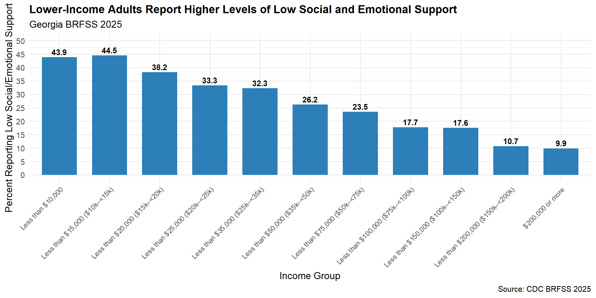
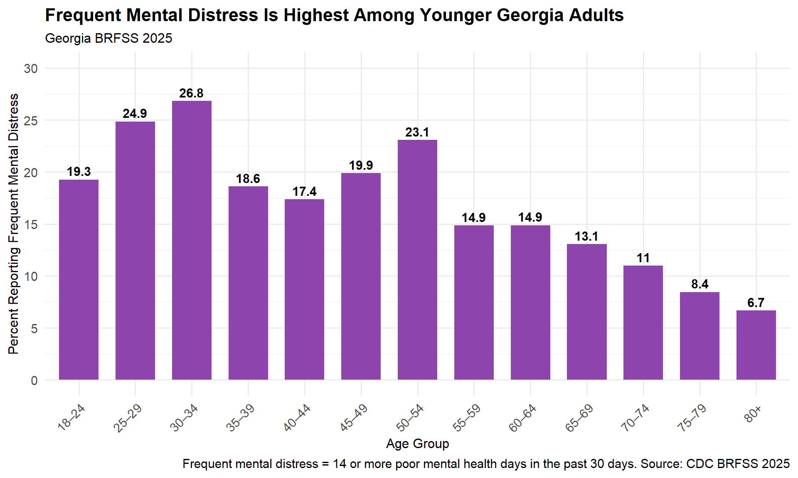

[1] 356158Examining Social Connection, Emotional Support, and Mental Distress Among Georgia Adults
Introduction
Social connection encompasses the number and variety of a person’s relationships, the roles those relationships play in daily life, and whether they provide positive support or create strain (CDC, 2024). It describes how individuals connect with others and the extent to which those relationships provide support, belonging, and substantial engagement. When this connection diminishes, social disconnection may occur. Two of which are social isolation (limited roles and engagement with others) and loneliness (dissatisfaction with one’s level of social connection) (World Health Organization, 2025). These suggest the challenges that may occur when social connection is not met. These forms (i.e., loneliness and social isolation) affect some populations more frequently, including older adults, young adults, individuals living alone, immigrants, adults identifying as sexual minorities, and financially vulnerable adults, while making individuals more vulnerable to depression, dementia, self-harm, type 2 diabetes, anxiety, stroke, and suicide-related outcomes (Centers for Disease Control and Prevention, 2024).
More importantly, social connection is linked to several components, one of which is emotional support. Emotional support is a form of social support which involves understanding, acceptance, compassion, and genuine concern (Drageset, 2021; Substance Abuse and Mental Health Services Administration, 2023). This indicates a sense of support where positive and reliable emotional exchanges exist. Emotional support plays a crucial role in the well-being and health of individuals, as well as providing perceived stability (Drageset, 2021), illustrating its significance in the lives of individuals. According to CDC (2024), social connections provide individuals with emotional support, which individuals can benefit from when facing both difficult and good moments. This indicates the level of encouragement that can be provided when positive life experiences and challenging situations occur.
Furthermore, individuals who have limited meaningful interactions, support systems, or a sense of belonging are more likely to experience emotional challenges such as depressive symptoms, anxious feelings, self-harming thoughts, and poorer psychological well-being over time (Centers for Disease Control and Prevention, 2024). This suggests that people tend to experience poorer emotional health when they lack strong relationships and regular engagement with others. A broad review of longitudinal studies also found that people who maintain stronger relationships, dependable support systems, and regular engagement with others generally report fewer symptoms associated with depression and anxiety, whereas those with weaker interpersonal ties face greater psychological difficulties over time (Wickramaratne et al., 2022). This indicates that having dependable people in one’s life may help protect against emotional strain and psychological distress. Authors of these studies also explained that feelings of disconnection and the absence of close interpersonal bonds were consistently linked to greater emotional difficulties, with several studies showing that these experiences often preceded increases in depressive and anxiety-related symptoms (Wickramaratne et al., 2022). This suggests that emotional separation from others may contribute to later declines in psychological well-being.
Nonetheless, there are resources and organizations that support and ensure social connection, peer support, community care, emotional support are provided, ensuring that there are support systems for mental health. Some of these are state agencies, local partners, communities, and non-profit organizations, such as Mental Health America (MHA), 988 suicide and crisis lifeline, GUIDE Inc., National Alliance on Mental Illness (NAMI), and The Trevor Project. The audience for this project extends to community mental health centers, program managers planning mental and wellness initiatives, nonprofits (serving low-income adults and minority communities), faith-based organization, and policymakers allocating resources to improve social connection and emotional support, in a way depicting the goal of this project. The purpose of this project is to examine social and emotional support and frequent mental distress among adults in Georgia using CDC BRFSS data. The project also seeks to identify demographic groups that experience higher levels of emotional or social support deficits and mental distress to inform public health programs, outreach efforts, and resource allocation.
The BRFSS Entire Dataset
Summarizing the Variables by Subgroups
Age SubGroup
Sex SubGroup
Income
Race/Ethnicity
Creating the Explanatory Visualizations (Each Subgroups)
Age Visualizations

Income Visualizations

Race/Ethnicity Chart

Full Mental Distress by Age Chart

Key Findings and Interpretations
Analysis of Georgia BRFSS 2025 data revealed substantial differences in social or emotional support and frequent mental distress across demographic groups. Younger adults experienced the highest prevalence of low social or emotional support. Approximately 32.0% of adults aged 30–34 reported low support compared with 18.0% of adults aged 80 years and older. Younger adults also reported the highest levels of frequent mental distress, particularly among adults aged 25–34 years.
Household income showed some of the strongest differences in the analysis. Adults with annual household incomes below $15,000 reported low social or emotional support at rates exceeding 40%, whereas adults with incomes of $200,000 or greater reported rates below 10%. Frequent mental distress followed a similar trend, suggesting a greater burden among lower-income populations.
Differences were also observed across racial and ethnic groups. Hispanic adults reported the highest prevalence of low social or emotional support, while White non-Hispanic adults reported the lowest prevalence. Multiracial adults reported the highest prevalence of frequent mental distress among the groups examined.
The findings indicate that social or emotional support deficits and mental distress are not evenly distributed across Georgia’s adult population. Younger adults, lower-income adults, and several racial and ethnic minority populations experienced a greater burden than other groups.
Public Health Implications
The findings demonstrate opportunities for targeted public health interventions designed to strengthen social connectedness and emotional support among Georgia adults. Younger adults and lower-income populations consistently experienced a greater burden of low support and mental distress, suggesting these groups may benefit from focused outreach and community-based support initiatives. Public health agencies, healthcare organizations, community mental health programs, and nonprofit organizations may use these findings to guide resource allocation and program planning. Efforts that promote social connection, peer support, community engagement, and access to mental health resources may help reduce disparities and improve overall well-being.
Limitations
Several limitations should be considered when interpreting these findings. First, BRFSS data are self-reported and may be subject to recall bias or social desirability bias. Second, the analysis is cross-sectional and cannot establish causal relationships between social or emotional support and mental distress. Third, some demographic groups may contain smaller sample sizes than others, which can affect estimate stability. Finally, the findings represent adults participating in the Georgia BRFSS survey and may not fully represent every adult living in the state.
Data Sources and Methods
This project used data from the 2025 Behavioral Risk Factor Surveillance System (BRFSS), a nationwide surveillance system administered by the Centers for Disease Control and Prevention (CDC) to monitor health conditions, risk factors, and health behaviors among adults in the United States. The analysis was limited to Georgia respondents by filtering records with a state code of 13. The variables examined included social and emotional support (EMTSUPRT), mental health status (MENTHLTH), age group (_AGEG5YR), sex (SEXVAR), household income (INCOME3), and race/ethnicity (_RACEGR3). The 2025 BRFSS public-use dataset contains 356,158 records and 284 variables.
Several variables were recoded to support the analysis. Low social or emotional support was defined as respondents reporting that they received needed support only sometimes, rarely, or never (EMTSUPRT = 3, 4, or 5). Frequent mental distress was defined as experiencing poor mental health on 14 or more days during the past 30 days. Respondents reporting no poor mental health days (MENTHLTH = 88) were classified as not experiencing frequent mental distress, while responses coded as refused, don’t know, or missing were excluded when appropriate.
Descriptive analyses were conducted to examine differences in low social or emotional support and frequent mental distress across age, sex, household income, and racial/ethnic groups. Summary tables and visualizations were created in R using the tidyverse package suite. The visualizations were designed to identify demographic groups experiencing a greater burden of emotional support deficits and mental distress and to support public health planning, community outreach efforts, and resource allocation within Georgia.
References
Centers for Disease Control and Prevention. (2025). Behavioral Risk Factor Surveillance System annual survey data. https://www.cdc.gov/brfss/annual_data/annual_2025.html
CDC. (2024). Social connection. Social Connection; CDC. https://www.cdc.gov/social-connectedness/about/index.html
Centers for Disease Control and Prevention. (2024, May 15). Health effects of social isolation and loneliness. Social Connection; CDC. https://www.cdc.gov/social-connectedness/risk-factors/index.html
Centers for Disease Control and Prevention. (2025). Behavioral Risk Factor Surveillance System (BRFSS) 2025 annual data. CDC.
Drageset, J. (2021). Social support (G. Haugan & M. Eriksson, Eds.). Springer. https://www.ncbi.nlm.nih.gov/books/NBK585650/
Substance Abuse and Mental Health Services Administration. (2023). Four types of social support. In Advisory: Peer support services in crisis care. National Center for Biotechnology Information. https://www.ncbi.nlm.nih.gov/books/NBK601481/box/ch4.b43/
Wickramaratne, P. J., Yangchen, T., Lepow, L., Patra, B. G., Glicksburg, B., Talati, A., Adekkanattu, P., Ryu, E., Biernacka, J. M., Charney, A., Mann, J. J., Pathak, J., Olfson, M., & Weissman, M. M. (2022). Social connectedness as a determinant of mental health: A scoping review. PLOS ONE, 17(10), e0275004. https://doi.org/10.1371/journal.pone.0275004
World Health Organization. (2025, June 30). Social connection. https://www.who.int/news-room/questions-and-answers/item/social-connection